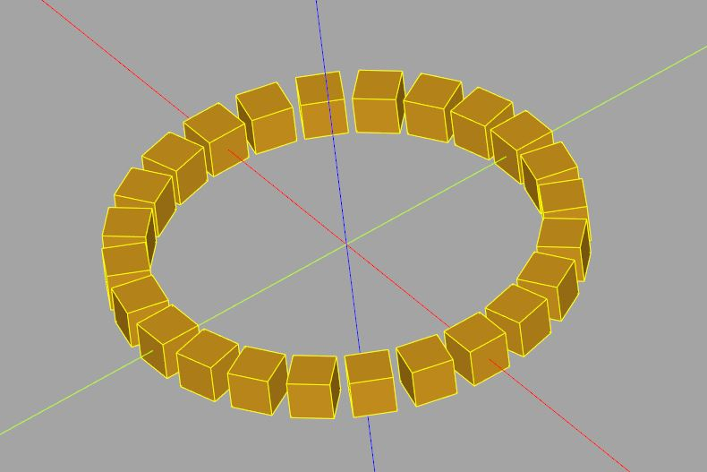

Workplane 入門
November 25, 2021在 CadQuery 要建立模型，Workplane 是方便的起點，一個 Workplane 實例代表著一個工作平面，這個平面有自己的座標系統，操作過程中工作平面上相關物件的建立、設定、選取等，都是基於該座標系統。
管理 3D 物件
一個 Workplane 實例也是個容器，可以同時管理許多 3D 實體（Solid）（以及頂點、邊、線、面等，之後會談），當然，也可以只管理一個 3D 實體，Workplane 實例有許多方法，可以對管理的 3D 實體同時進行操作。
Workplane 實例的大多數方法執行過後，會建立一個新的 Workplane 實例，包含了變動後的結果，而不是在既有的 Workplane 實例上進行狀態變動，因為會傳回 Workplane 實例，便於構成鏈狀操作風格，方法操作後新建的 Workplane 實例，會記得上一個 Workplane 實例。
如果你玩過 jQuery，應該對以上的操作模式覺得熟悉，這是因為〈Hello, CadQuery〉中談過的，CadQuery 的風格受到 jQuery 的影響，而且鼓勵使用鏈狀操作風格。
不過，你可能沒寫過前端，就算有，現在也不見得會接觸過 jQuery，這種操作對你來說，可能是新的風格，若是如此，建議先從簡單的模式開始。
排列方塊
例如，如果要指定半徑，在圓的邊界上排上幾個方塊，一個方式是：
import cadquery as cq
size = 2
radius = 10
fn = 24
a = 360 / fn
box = cq.Workplane().box(size, size, size)
circled_boxes = cq.Workplane()
for i in range(0, 360):
circled_boxes.add(
box.translate((radius, 0, 0)) # 平移
.rotate((0, 0, 0), (0, 0, 1), i * a) # 旋轉
)
show_object(circled_boxes)
Workplane() 預設會以 XY 平面作為工作平面，box 方法會建立方塊，在 CadQuery 中，許多 3D 實體建立時，都是以原點為中心，因此以上的 box 建立了中心在原點，長寬高為 size 的方塊。
box 方法會傳回 Workplane 實例，就以上程式而言，這個實例中管理了一個立方塊，雖然如此，還是可以將傳回的 Workplane 實例指定給變數 box，變數名稱可以反映 Workplane 管理的實體組成了什麼。
以上的程式碼建立了另一個 Workplane，用來管理最後想要的 3D 實體，也就是一組排成圓圈的方塊。
在 for 迴圈中，透過 box 的 translate 方法，將 box 管理的 3D 實體（目前只有一個方塊），位移至 (radius, 0, 0)，這會建立新的 Workplane 實例，其中包含了位移後的方塊。
接著透過 rotate，會將工作平面繞 (0, 0, 0) 與 (0, 0, 1) 構成的向量旋轉指定角度，因為現在是在 XY 平面，(0, 0, 0) 與 (0, 0, 1) 構成的向量，方向與 Z 軸相同，結果就是繞 Z 軸旋轉。
注意，轉動的是工作平面，不是它管理的 3D 實體，如果你站在這個 Workplane 的座標系統內，是不會知道有在轉動的，轉動後會會建立新的 Workplane 實例，這個實例被加入至 circled_boxes，從 circled_boxes 的角度來看，被加入的 Workplane 中的方塊被轉動了。
注意，每一次操作都會建立新的 Workplane 實例，因此 for 迴圈中，每次都是從既有的 box 建立新的 Workplane，而不是直接改變 box 的狀態，CadQuery 採用這種模式的好處是，你可以基於某個已建立的 Workplane，來進行進一步的操作，而不用每次重新運算來建立模型。
看起來好麻煩，其實一開始是也不用講這麼多，畢竟以上的程式碼看來也蠻直覺的，將 box 移動後旋轉，加入 circled_boxes，只不過，若一開始就能意識到 Workplane 的座標系統、它管理 3D 實體的方式、每次操作會產生新的 Workplane 實例等事實，後續在更熟悉 CadQuery 後，建立相關物件就會更有彈性。
執行以上的範例後，你會看到以下的結果：

OpenSCAD 若不是因為 Functional programming 的風格，就建立模型本身來說，其實是比較簡單的，這也是為什麼還是有不少人持續使用著 OpenSCAD；相對而言，CadQuery 可以完成一些 OpenSCAD 比較難到的任務，不過，代價是也得認識更多的觀念，也許可以試著用 CadQuery 來封裝出一些類似 OpenSCAD 的函式或模組等，來取得中間的平衡吧！